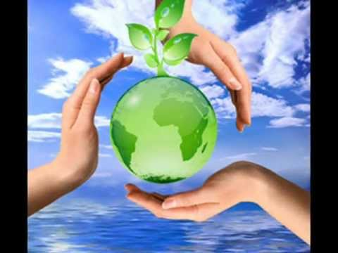
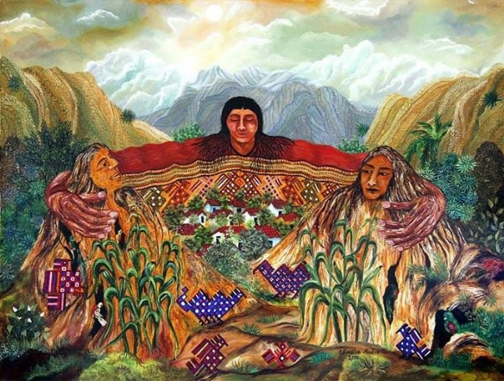

Día Internacional de la Madre Tierra 22 de abril

- 


Realizado por:
Darwin Joaquin Alarcon Briones
4 "E"
Especialidad
Desarrolla Aplicaciones Móviles
Docente:
Lic. José Antonio Gómez Hernández
.jpg)
Día de la madre Tierra
Darwin Joaquin Alarcon Brione
4 "E"
Desarrolla Aplicaciones Móviles
Lic. José Antonio Gómez Hernández
Celebramos el Día Internacional de la Madre Tierra para recordar que el planeta y sus ecosistemas nos dan la vida y el sustento. Con este día, asuminos, además, la responsabilidad colectiva, como nos recordaba la Declaración de Rio de 1992, de fomentar esta armonía con la naturaleza y la madre Tierra. Este día nos brinda también la oportunidad de concienciar a todos los habitantes del planeta acerca de los problemas que afectan a la Tierra y a las diferentes formas de vida que en él se desarrollan.

Historia del dia

¿Cuándo es el Día de la Tierra?
Según el refrán “Todos los días son el Día de la Tierra”. Pero se celebra popularmente el 22 de abril. ¿Por qué?
Las malas lenguas sostienen que el 22 de abril fue elegido como el Día de la Tierra por el cumpleaños de Vladimir Lenin, el fundador de la Unión Soviética, que por una mera coincidencia se celebran el mismo día.
"El objetivo de Lenin era destruir la propiedad privada, meta que también comparten los ambientalistas”, publicó en 2004 la web Capitalism Magazine.
Kathleen Rogers, presidenta de la organización del Día de la Tierra en Washington y una de las primeras fundadoras en la organización del Día de la Tierra, se burla de la teoría.
Según Kathleen, una de las principales razones para elegir aquel 22 de abril de 1970 como el primer Día de la Tierra porque ese año cayó en un miércoles, el día de la semana ideal para convocar una manifestación por el medio ambiente en todo el país.
"Todo funcionó a la perfección, porque todo el mundo fue a la manifestación al terminar su jornada laboral” dijo Kathleen.
De hecho, más de 20 millones de personas en los EE.UU. participaron en el primer Día de la Tierra. A partir de entonces, este día se celebra cada año con la una participación superior a los mil millones de personas en 180 países de todo el mundo, según los datos de Rogers.
Gente enfadada y un político frustrado
El Día de la Tierra tiene sus raíces en en 1960, la década del activismo combativo: “El medioambiente empezaba a sufrir y la gente estaba enfadada”.
"En algunas ciudades del país, no era raro que pudieras caminar por el centro el plena hora punta y no poder ver nada debido a la contaminación”, dijo.
A pesar del desencanto popular, las cuestiones ecológicas no estaban presentes en la agenda de los políticos de americanos, cuestión que irritaba al senador por Wisconsin, Gaylord Nelson, cuyas campañas en favor del medio ambiente durante la década de 1960 no surtieron efecto.

El primer día de la Tierra despegó con entusiasmo"
En 1969, Nelson tuvo la idea de organizar una protesta en favor del medio ambiente tomando como modelo las manifestaciones en contra de la guerra de Vietnam.
"Fue algo frenético. Nos llegaban telegramas, cartas y consultas telefónicas desde todas partes del país", escribiría Nelson en un ensayo poco antes de morir en julio de 2005 a los 89 años.
"El pueblo estadounidense por fin tenía un foro para expresar su preocupación sobre lo que estaba sucediendo con la tierra, los ríos, los lagos y el aire, y lo hicieron de forma espectacular".
Nelson reclutó al activista Denis Hayes para organizar aquel primer 22 de abril en1970. Hoy en día se reconoce a Hayer como el precursor del movimiento ecologista moderno.
La Agencia de Protección Medioambiental de EE.UU nació a finales de 1970, y desde entonces los esfuerzos para mejorar la calidad del aire y el agua fueron ganando terreno en el ámbito político.
"Fue verdaderamente increíble lo que pasó ", dijo Rogers. "Los muros simplemente se derrumbaron”.
El Día de la Tierra evoluciona
La profesora adjunta del Instituto de Recursos Mundiales en Washington DC, Amy Cassara, analiza las tendencias globales del medio ambiente.
Amy señala que desde el comienzo del Día de la Tierra, la conciencia ambiental ha pasado de ser una cuestión marginal a convertirse en toda una preocupación general. "El 80 por ciento de los estadounidenses se describen como defensores del meidoambiente", dijo Cassará.

“Sin embargo, los problemas medioambientales de hoy van más allá del aire sucio, el agua tóxica, y los agujeros en la capa de ozono”, añadió.
El impacto sobre el medio ambiente ha ido cambiando hasta convertirse en algo abstracto y difíciles de explicar " dijo Cassara.
"A medida que nos industrializamos, nuestras cadenas de abastecimiento se van haciendo menos transparentes, por lo que las consecuencias de nuestras acciones sobre el medio ambiente son más difíciles de entender” señaló.
La plataforma del Día de la Tierra quiere que este día no se celebre solo durante una joranda, si no que el compromiso se extienda todo el año.
“Poética y moralmente, plantar un árbol requiere atención durante mucho tiempo, no se trata solo de plantarlo en el suelo” dijo Rogers.
Para ayudar a hacer la transición hacia un mundo bajo en carbono, la organización colabora con cien mil escuelas de todo el mundo y forma parte de proyectos ambientales durante todo el año.
Cassara dijo que su organización emplea el Día de la Tierra para tratar de involucrar a los líderes políticos en el movimiento ecologista.
"El Día de la Tierra no crea conciencia entre el público de la misma manera que solía hacerlo. Pero todavía proporciona un punto de referencia para la reflexión entre aquellos que nos encontramos dentro de la comunidad del medio ambiente", dijo.

¿Qué hacer durante el Día de la Tierra?
Rogers anima a establecer un compromiso público para realizar una acción relacionada con el medio ambiente a todos aquellas personas implicadas con el medio ambiente el próximo 22 de abril.
Comprometerse con las ideas promovidas desde la plataforma Día de la Tierra supone educar a los amigos y familiares sobre el calentamiento global o comprar productos ecológicos como bombillas de bajo consumo.
El compromiso es la máxima de la iniciativa que se prolonga durante todo el año, "La Generación Verde", que nos ha llevado a una nueva convocatoria del Día de la Tierra en 2018.
Según Rogers, todos son parte de esta generación que marca la transición de la revolución industrial a la revolución verde.
"También se trata de generar energía y empleos verdes. ... Cada vez que mencionas “Generación Verde”, la gente sabe a qué ideas te estás refiriendo, y eso es exactamente lo que queremos".
El 23 de abril de 2018 se realizó en la sede de las Naciones Unidas en Nueva York, el 8° Diálogo Interactivo sobre Armonía con la Naturaleza, en ocasión de la conmemoración del Día Internacional de la Madre Tierra.
El evento fue convenido por el Presidente de la Asamblea General, Miroslav Lajcak, quien destacó la importancia del Diálogo para intercambiar ideas sobre desarrollo y patrones de producción y consumo sostenibles en armonía con la naturaleza.
Durante la jornada, se discutió sobre cómo los marcos legales y económicos de la Jurisprudencia de la Tierra impactan la implementación de patrones de producción y consumo sostenibles en Armonía con la Naturaleza.
El Diálogo se realizó con el objetivo de inspirar a los ciudadanos y las sociedades a reconsiderar la relación que mantienen con la naturaleza, acorde a la meta 12.8 de los Objetivos de Desarrollo Sostenible con respecto a los patrones de consumo y producción sostenibles.
Mejorar la base ética de la relación entre la especie humana y la Tierra en el contexto del desarrollo sostenible no es solo beneficioso, sino también necesario.
“Madre Tierra” es una expresión común utilizada para referirse al planeta Tierra en diversos países y regiones, lo que demuestra la interdependencia existente entre los seres humanos, las demás especies vivas y el planeta que todos habitamos.
La Tierra y sus ecosistemas son nuestro hogar. Para alcanzar un justo equilibrio entre las necesidades económicas, sociales y ambientales de las generaciones presentes y futuras, es necesario promover la armonía con la naturaleza y el planeta. Es por eso que celebramos el Día Internacional de la Madre Tierra para recordar que el planeta y sus ecosistemas nos dan la vida y el sustento. Con este día, asumimos, además, la responsabilidad colectiva, como nos recordaba la Declaración de Río de 1992, de fomentar esta armonía con la naturaleza y la Madre Tierra.
El Día de la Tierra es un día muy celebrado en muchos países el 22 de abril. Su promotor , el senador estadounidense Gaylord Nelson, instauró este día para crear conciencia común a los problemas de la sobrepoblación, la producción de contaminación, la conservación de la biodiversidad y otras preocupaciones ambientales para proteger a la Tierra. Es un día para rendir homenaje a nuestro planeta y reconocer a la Tierra como nuestro hogar y nuestra madre, así como lo han expresado distintas culturas a lo largo de la historia.
Este, año se celebra el octavo Diálogo sobre armonía con la naturaleza, el día 23 de abril en la Sede de la ONU de Nueva York. Este diálogo interactivo es una buena plataforma para tratar temas como la producción sostenible y los patrones de consumo en Armonía con la naturaleza. Como será también una buena plataforma la cumbre del Urban 20, que se dará en Buenos Aires los días 29 y 30 de octubre. Asimismo el diálogo quiere fomentar que los ciudadanos y las sociedades se concienticen sobre cómo se relacionan y cómo pueden relacionarse con el mundo natural; al mismo tiempo, pretende mejorar los cimientos éticos de la relación entre la humanidad y la Tierra, en términos de desarrollo sostenible.
Pero esto debería ser siempre. Entonces ¿para qué un Día Internacional de la Madre Tierra? Para sensibilizar, concientizar, llamar la atención y señalar que existe un problema sin resolver, un asunto importante y pendiente en la sociedad para que, a través de la sensibilización, los gobiernos y los estados actúen y tomen medidas o para que los ciudadanos así lo exijan a sus representantes. El Día Internacional de la Madre Tierra es un recordatorio de que nuestro planeta necesita que todos y cada uno de nosotros se comprometa con esta causa y contribuya a avanzar en la dirección correcta. Llegó el momento de asumir el liderazgo para que unos a otros nos estimulemos con nuestro ejemplo. Para muchos, el cambio climático es un problema lejano pero la realidad es que ya está afectando las vidas de animales, personas de todo el mundo y de comunidades enteras. El mundo necesita un cambio profundo. Este 22 de abril es una oportunidad para impulsar el Día Internacional de la Madre Tierra y mostrar a nuestras comunidades lo que hacemos, que queremos nuevas acciones encaminadas a luchar contra el cambio climático. Llegó la hora de tomar la iniciativa. Por la tierra.
.jpg)
El suelo es un componente central de los recursos de tierras y la base del desarrollo agrícola y la sostenibilidad ecológica. El suelo es la base para obtener alimentos, piensos, combustible y producción de fibras y muchos servicios ecológicos vitales. El suelo es un sistema vivo complejo, dinámico y su idoneidad varía de un lugar a otro. El área de tierra productiva es limitada y se encuentra bajo una creciente presión por la intensificación y los usos que compiten por los cultivos agrícolas, bosques y pastos/pastizales, y para satisfacer las demandas de una creciente población de alimentos y producción de energía, extracción de materias primas, y demás.

Desafíos clave
Teniendo en cuenta las tendencias demográficas actuales y el crecimiento previsto de la población mundial (que superará las 9000 millones de personas en 2050), que se calcula que aumentarán la demanda de alimentos, piensos y fibras en un 60 por ciento para el 2050, la gestión sostenible de los suelos agrícolas del mundo y la intensificación de la producción sostenible se han convertido en un imperativo para la seguridad alimentaria mundial, pero estos objetivos no pueden lograrse plenamente a menos que los suelos se sitúen en un lugar prioritario en la agenda de desarrollo. Hay pocas posibilidades de expandir la superficie agrícola, excepto en algunas zonas de África y América del Sur. Gran parte de la tierra adicional disponible no es apta para la agricultura, y los costes ecológicos, sociales y económicos de convertirla en tierra productiva serán muy altos. Además, el 33 por ciento de la tierra está altamente degradada y otro 44 por ciento está ligeramente o moderadamente degradada debido a la erosión, la salinización, la compactación y la contaminación química de los suelos.
Estos objetivos paralelos no se pueden lograr plenamente a menos que los suelos se coloquen en el centro de la nueva agenda de desarrollo. Existen vínculos bien conocidos entre los suelos y la pobreza, que a menudo van asociados a problemas socioeconómicos y de gobernanza.
La degradación de la tierra y el agotamiento del suelo es una amenaza mundial real y creciente e implica una serie de procesos, como: la erosión por el viento y el agua y la labranza, compactación, sellado, desequilibrio de nutrientes, pérdida de materia orgánica del suelo, acidificación, salinización y contaminación. Estos procesos son causados por prácticas insostenibles de gestión de la tierra que resultan de diversos factores sociales, económicos y de gobernanza. El daño que producen en el suelo afecta a los medios de vida, las funciones de los ecosistemas, la seguridad alimentaria y el bienestar humano. La tasa actual de degradación de la tierra y de los suelos pondrá sin duda en peligro la capacidad de las generaciones futuras para cubrir sus necesidades básicas, a menos que adoptemos un nuevo enfoque para gestionar este recurso vital de manera sostenible.

¿Qué hay que hacer?
El uso y la gestión sostenible de los suelos están vinculados con numerosos ámbitos del desarrollo sostenible. Hay una necesidad urgente de detener la degradación de la tierra y el agotamiento de los nutrientes del suelo y establecer marcos para la gestión sostenible de la tierra y de los suelos.
Fomentar la gestión sostenible de la tierra y de los suelos puede contribuir a la salud del suelo y así también a los esfuerzos para erradicar el hambre y la inseguridad alimentaria y a la estabilidad de los ecosistemas.
El Grupo Técnico Intergubernamental sobre Suelos recomienda las siguientes acciones: